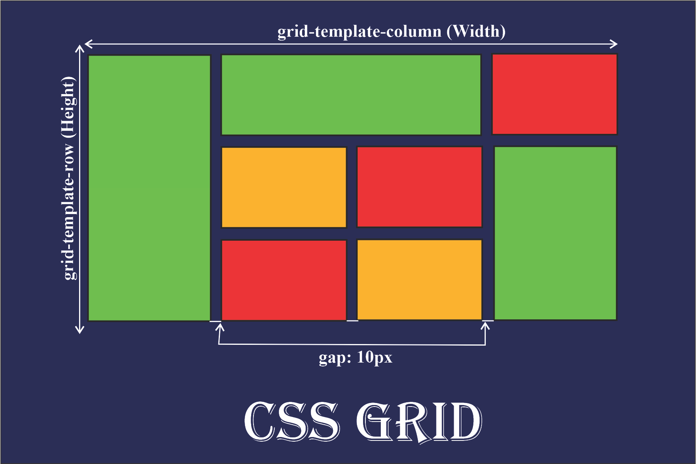

¿Qué es CSS?
CSS (Casacading Style Sheet) se utiliza para el diseño y la apariencia de las páginas web.

Video explicativo sobre CSS
Propiedades principales de CSS
| Propiedad | Descripción |
| color | Define el color del texto. |
| Background-color | Establece el color de fondo. |
| font-size | Especifica el tamaño de la fuente. |
| margin | Controla el espacio alrededor de un elemento. |